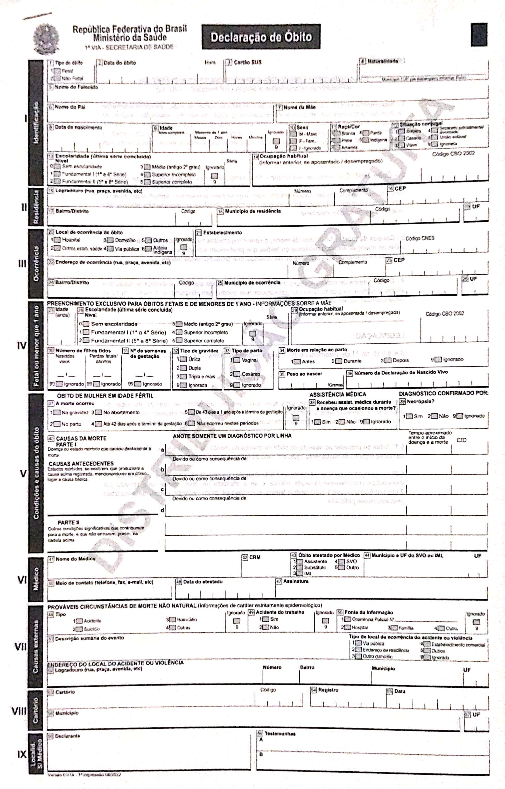

flowchart TD do[Declaração de Óbito] --> via1[1a Via] do --> via2[2a Via] do --> via3[3a Via] via1 --> sms[Secretaria Municipal de Saúde] via2 --> fam[Família] fam --> rg[Registro Civil] rg --> ao[Atestado de Óbito] via3 --> es[Estabelecimento de Saúde]
3 SIM – Sistema de Informação sobre Mortalidade
3.1 Resumo
- Ano de criação: 1975
- Cobertura: Dimensões pública e privada do SUS
- Unidade: Declaração de Óbito
- Divulgação de dados: anual, com um ano de defasagem
3.2 Histórico e organização
O SIM foi o primeiro sistema de informação em saúde de abrangência nacional. As condições para a sua criação se iniciam em 1975, com a formação de um Grupo de Trabalho (GT) no Ministério da Saúde com o objetivo da adoção de um modelo único de Declaração de Óbito (DO), como um documento legal de impressão centralizada, controlada e numerada. Um histórico mais completo sobre o SIM está disponível em um documento escrito pelo DataSUS.
Este instrumento possibilitaria um fluxo padronizado de informações e de processamento. A criação e adoção da DO possibilitou uma mudança profunda na organização do Registro Civil, pois este instrumento tem origem na própria unidade de saúde e, a partir dele, se obtêm a Certidão de Óbito nos cartórios de Registro Civil.
O documento básico do SIM é a Declaração de Óbito (DO), que é padronizada nacionalmente, gerenciada e distribuída pelo Ministério da Saúde, emitida em três vias com destinações distintas, conforme fluxo apresentado na Figura 3.1. A primeira via é retida pelo estabelecimento de saúde e enviada para a secretaria municipal de saúde, a segunda via é destinada à família e que deverá ser levada ao Registro Civil para a obtenção do Atestado de Óbito, já a terceira via permanece na unidade notificadora do óbito, servindo como arquivo.
A DO é emitida para todos os tipos de óbito, incluindo óbitos fetais, sendo preenchida por um médico ou, quando da ausência de um médico, o preenchimento é realizando em cartório, diante de testemunhas. Neste documento consta a causa básica do óbito e demais causas secundárias, que são codificadas conforme a Classificação Internacional de Doenças (CID). Este dado é de grande importância para estudos em saúde, possibilitando acompanhar as principais causas de óbitos em diferentes grupos de doenças e recortes sociais.
A partir de 1979, o SIM passou a apresentar dados consolidados e, desde então, a qualidade de seu preenchimento vem sendo aprimorada, principalmente sobre os dados referentes a idade, raça/cor e existência de gravidez. O maior desafio do SIM é a correta definição da causa básica da morte, ainda sendo encontrado um número excessivo de declarações de óbito com causas mal definidas (SENNA, 2009).
Mais informações sobre o preenchimento dos dados do SIM estão disponíveis no manual de preenchimento, disponibilizado pelo Ministério da Saúde.
3.3 Modelo da Declaração de Óbito

3.4 Estrutura e dicionário de dados
Confira o documento de estrutura do SIM.
3.5 Acesso aos dados
3.5.1 TabNet
Os dados do SIM podem ser acessados no sistema TabNet do DataSUS, na seção de Estatísticas Vitais.
3.5.2 TabWin
Para uso no TabWin, você irá precisar baixar no servidor de FTP do DataSUS, os arquivos de dados no formato DBC e os arquivos auxiliares para tabulação.
3.5.3 R
Você pode usar o pacote {microdatasus}.
library(microdatasus)
sim_raw <- fetch_datasus(
year_start = 2021,
year_end = 2021,
uf = "AC",
information_system = "SIM-DO"
)
sim_p <- process_sim(sim_raw)
sim_p# A tibble: 5,496 × 111
ORIGEM TIPOBITO DTOBITO HORAOBITO CODMUNNATU DTNASC IDADE SEXO RACACOR
<chr> <chr> <chr> <chr> <chr> <chr> <chr> <chr> <chr>
1 1 Não Fetal 2021-03-23 1500 110020 1962-06… 458 Masc… Parda
2 1 Não Fetal 2021-03-23 0243 120050 1971-02… 450 Masc… Parda
3 1 Não Fetal 2021-03-23 1310 120040 1956-10… 464 Femi… Parda
4 1 Não Fetal 2021-04-17 2149 120050 1999-01… 422 Masc… Parda
5 1 Não Fetal 2021-01-06 0420 120020 2020-08… 304 Masc… Parda
6 1 Não Fetal 2021-02-06 1145 120034 1943-12… 477 Masc… Parda
7 1 Não Fetal 2021-02-15 <NA> 120050 1970-06… 450 Masc… Parda
8 1 Não Fetal 2021-02-16 0720 120060 1935-01… 486 Masc… Preta
9 1 Não Fetal 2021-02-15 1320 120050 1951-04… 469 Femi… Amarela
10 1 Não Fetal 2021-02-13 0700 120050 1957-02… 464 Masc… Parda
# ℹ 5,486 more rows
# ℹ 102 more variables: ESTCIV <chr>, ESC <chr>, ESC2010 <chr>,
# SERIESCFAL <chr>, CODMUNRES <chr>, LOCOCOR <chr>, CODESTAB <chr>,
# ESTABDESCR <chr>, CODMUNOCOR <chr>, IDADEMAE <chr>, ESCMAE <chr>,
# ESCMAE2010 <chr>, SERIESCMAE <chr>, QTDFILVIVO <chr>, QTDFILMORT <chr>,
# GRAVIDEZ <chr>, SEMAGESTAC <chr>, GESTACAO <chr>, PARTO <chr>,
# OBITOPARTO <chr>, PESO <chr>, TPMORTEOCO <chr>, OBITOGRAV <chr>, …3.5.4 PCDaS
Os dados do SIM estão disponíveis na PCDaS para acesso via notebooks.
3.5.5 Outras formas
Dados em formato CSV estão sendo disponibilizados no site OpenDataSUS, mantido pelo DataSUS, incluindo versões de dados preliminares do ano corrente.
3.6 Principais usos e indicadores
Segundo a RIPSA (INFORMAÇÃO PARA A SAÚDE, 2008), os dados do SIM são utilizados na construção de diversos indicadores de mortalidade. Pode-se destacar os seguintes:
- Taxa de mortalidade infantil
- Taxas de mortalidade neonatal precoce e tardia, pós-neonatal e perinatal
- Taxa de mortalidade em menores de cinco anos
- Razão de mortalidade materna
- Mortalidade proporcional por grupos de causas